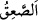
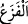
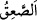
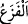
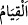

olduğunu savunan Bişr Merîsî, bu mezarlıkta bulunan kabrine konulunca cehennem ona
doğru büyük bir öfke ve homurtu ile hücum etti. İşte saçlarım bu esnâda duyduğum korku
ve dehşet yüzünden ağardı.” Bunun pekçok örneği vardır.
Ruhlara “ervâh-ı âliye-i müheyyeme (hayrete gark olmuş yüce ruhlar)” denilenler de
dâhildir. Çünkü onlar ruh oldukları için, ne ölürler ne de kendilerinden geçerler. Zira
onların Allah dışındaki herhangi bir varlıktan (mâsivâ) haberleri yoktur. Aksine onlar
şühûd/müşâhede denizinde gark olmuşlardır. Buna göre âyetteki üfürme/nefha,
öldürmek için olan nefhadan başkadır. Bu nefhalar ileride açıklanacaktır.
Eğer “Bu âyetteki “ (ölme)” ile “Sûr’a üfürüldüğü gün, -Allah’ın diledikleri
müstesnâ- göklerde ve yerde bulunanlar hep dehşete (feza’) kapılır.” (en-Neml,
27/87) “ (dehşet)” arasındaki fark nedir?” diye sorarsan, derim ki: şüphe yok ki
ölüm mânâsına olan “, “dan başkadır. Kendinden geçme/bayılma mânâsına
olduğunda da durum aynıdır. Çünkü her dehşete kapılan baygınlık geçirmez. Bu
makamda bizim anladığımız budur. Gerçek bilgi, Melik ve Allâm olan/herşeyi bilen
Allah katındadır.
“Sonra ona bir daha üflenince, bir de ne göresin, onlar” yâni bütün yaratılmışlar
“ayağa kalkmış” yâni kabirlerinden kalkarak ayakları üzerinde durmuş ya da “
şaşkınlıkları sebebiyle oldukları yerde ayakta donup kalmak mânâsına olduğu için
dikilip kalmış “bakıyorlar!” Şaşırıp kalan kimseler gibi gözlerini bir o yana bir bu yana
çevirirler ya da kendilerine ne yapılacağını beklemeye başlarlar. Denilir ki onlar
göklerin nasıl değiştirildiğine, yerin nasıl başkalaştığına, dâvetçinin kendilerini nasıl
hesab vermeye çağırdığına, babaların ve annelerin şefkatlerinin nasıl gittiğine ve kendi
başlarının derdine düştüklerine, hasımlarının onlara neler yaptıklarına bakacaklardır.
Âyette bahsedilen ilk bakışa göre, ikinci nefhadır.
Bir hadîste şöyle buyrulmuştur: “Kabri ilk yarılıp açılacak olan benim. Meleklerden
ilk diriltilecek, Sûr’a üfürmesi için İsrâfîl olacak. Hayvanlardan ilk diriltilecek Hz.
Peygamber (a.s.)’ın Burâk’ı olacak. Arş’ın gölgesinde ilk gölgelenecek olan, darda
kalmış kimseye mühlet veren veya borcunu silen kimsedir. Havuz’a ilk gelecek
olanlar, ümmetin fakirleri ve birbirlerini Allah için sevenlerdir. İlk elbise giydirilecek
olan, İbrahim Halîl (a.s.)’dır. Çünkü o ateşe çıplak atılmıştı. İlk ateşten giysi
giydirelecek olan İblîs’tir. İlk hesaba çekilecek olan, Allah’ın elçilerine gönderdiği
emîni olduğu için Cebrâil olacak. İnsanlar arasında ilk hükme bağlanacak olan, kan
dâvâlarıdır.
Kişinin ilk hesaba çekileceği şey, namazlarıdır. Kadına sorulacak ilk soru namazı,
sonra kocası hakkında olacaktır. Kula kıyâmet günü sorulacak nimetlerin ilki ona:
“Senin bedenini sağlıklı kılıp soğuk sular içirmedim mi?” denilmesi olacak. Mîzana
ilk konulacak amel güzel ahlâktır. Kulun mîzanına ilk konulacak şey, çoluk çocuğuna
yaptığı harcamalardır.
İnsanoğlunun ilk konuşacak parçası baldırı ve avuç içidir. İlk hasımlar komşular